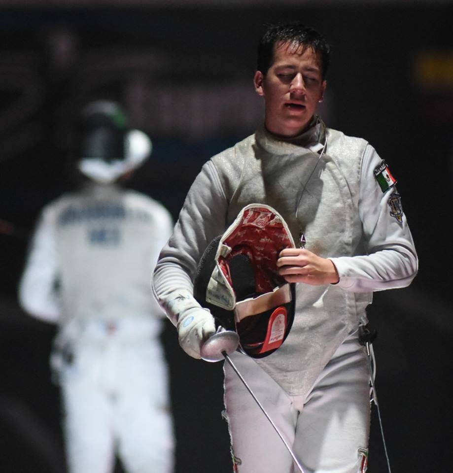

I started fencing alongside my two older brothers when I was 9 years old. We started in a small club in our town, 10 minutes from where I lived. The three of us loved the sport right away and after a year of training, we started fencing in local and national competitions. We were all getting very good, I was winning most of the national tournaments and my brothers were in the top of the country as well. After three years of training in our local club, we had to quit the club due to personal reasons. After that, we were pretty much on our own, there was nowhere else to train so we started training in our garage, just the three of us. After a while, we got a coach from a different city who came to our garage once or twice a week so that was better. Of course, it was more challenging than ever before but we were still committed as we all dreamt with going to the Olympics. In 2014 I got selected to be part of the Cadet and Junior National Team. That year, I went to different parts of the world to train and compete in world cups, the Pan American Championship and the World Championship. I did not do very well. After that year, I went to Portland Oregon in the US to train with an excellent french coach. That year I got first place in the Pan American Championship and 36th place in the World Championship which was a very big improvement. After that, I went back to Mexico to finish high school, I kept competing in national and international competitions and I became part of the Senior National Team. After finishing high school, I came to Loughborough University in the UK where I was captain and a current member of the first team.